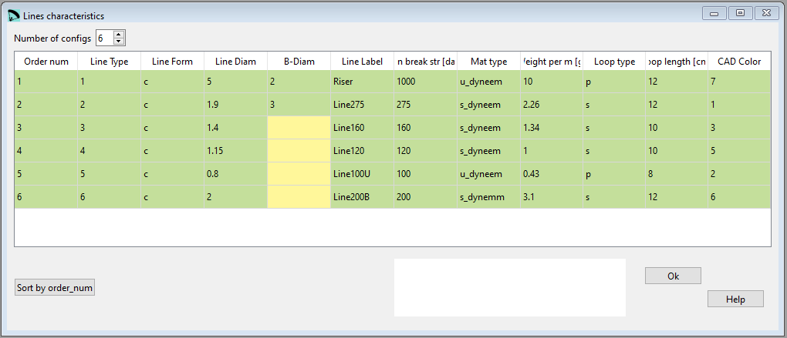

Lines characteristics¶
In the Lines characteristics window you can define the special parameters for individual lines.
{kind=link}
Raw data:
*******************************************************
* 34. LINES CHARACTERISTICS TABLE
*******************************************************
1
6
1 c 5.0 2.0 Riser 1000 daN u_dyneem 10.0 g p 12. cm 7
2 c 1.90 3.0 Line275 275 daN s_dyneem 2.26 g s 12. cm 1
3 c 1.40 Line160 160 daN s_dyneem 1.34 g s 10. cm 3
4 c 1.15 Line120 120 daN s_dyneem 1.00 g s 10. cm 5
5 c 0.80 Line100U 100 daN u_dyneem 0.43 g p 8. cm 2
6 c 2.00 Line200B 200 daN s_dynemm 3.10 g s 12. cm 6
Definition table of the properties of N different types of lines used in our paraglider. Up to 50 different types of lines.
Line type This type number will be used afterwards for the assignment of the definitions in here to the indiviual lines.
Line Form r or c (r=rectangular axb or c=circular section)
Line diameter in [mm]
B-Diam only applicable if Line Form r is set
Line label e.g. “Riser”, “PPSL275”, “DC60”,… use names without spaces up to 15 characters
Min break str Minimum breaking strenght (daN)
Mat type “dyneema”, “aramid”, “polyester”… use names without spaces up to 15 characters
Weight per m line weight in [g] per meter
Loop type s or p (s=sewed or p=spliced loop)
Loop length Total loop length (cm)
CAD Color Set line CAD color, used only if code 1341 is active in section 37 (Special Parameters)
Sort by Order Num¶
The button Sort by Order Num can be used to rearrange the definition lines. If for whatever reasons you will rearrange the lines, just define the numbering in an ascending order and press the Order button afterwards. Lepg will reorder the lines according to the numbering you’ve choosen.
A more detailed description you can find here Laboratori d'envol website.